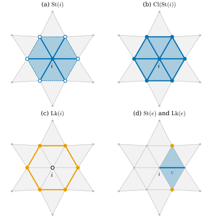
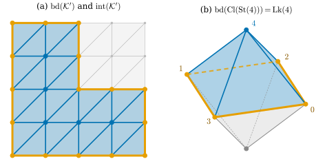

33.2 Star, Closure, and Link
Goals
- simplex들의 집합 \(S\)에 대해 star \(\operatorname{St}(S)\), simplicial closure \(\operatorname{Cl}(S)\), link \(\operatorname{Lk}(S)\)를 계산할 수 있다.
- \(\operatorname{Cl}(S)\)와 \(\operatorname{Lk}(S)\)는 subcomplex이고 \(\operatorname{St}(S)\)는 일반적으로 아님을 증명하고, vertex의 star가 그 link 위의 cone이라는 것을 설명할 수 있다.
- pure subcomplex의 boundary와 interior를 계산하고, 그것이 manifold의 boundary와 어떻게 다른지 말할 수 있다.
Prerequisites
- Definition 33.1.18: abstract simplicial complex, face
- Example 33.1.20: face list가 생성하는 complex
- (비교용) Definition 31.1.3: Track 1의 vertex link
Motivation
Section 33.1에서 simplicial complex를 “부분집합에 닫힌 집합족”으로 정의했다. 이제 그 안에서 위치를 가리키는 말이 필요하다. surface 위의 점 \(p\)를 공부할 때 우리는 \(p\)의 작은 이웃, 그 이웃의 테두리 같은 말을 쓴다. complex에는 “작은”이라는 말이 없다. 길이가 없기 때문이다. 대신 \(p\)에 붙어 있는 simplex들, 곧 한 겹짜리 이웃을 쓴다.
Track 1의 Definition 31.1.3은 vertex \(i\)의 link를 “\(i\)를 포함하는 triangle \(ijk\)마다 맞은편 edge \(jk\)를 모은 것”으로 정의했다. triangle mesh의 vertex에는 이것으로 충분했지만, edge나 simplex 여러 개의 이웃, 그리고 tetrahedron mesh 같은 높은 dimension에는 쓸 수 없다. 이 절은 어떤 simplex 집합 \(S\)에도 쓰는 세 연산 star, simplicial closure, link를 정의한다. 셋은 집합 연산만으로 정의되고, 그래서 dimension에 무관하다.
Intuition: One Ring Around a Vertex

dgdec.star, closure, link로 계산했다. 읽는 법: 회색은 complex 전체이고, 파랑은 그 패널의 집합에 속한 simplex(칠한 triangle, 굵은 edge, 채운 점), 주황은 link다. (a)의 파란 점선과 속이 빈 원은 star에 속하지 않는 테두리 edge와 vertex다. 볼 것: (a)의 star는 \(i\)를 포함하는 simplex 13개(vertex 1, edge 6, triangle 6)인데, 테두리가 빠져 있어 complex가 아니다. (b)는 거기에 테두리를 채운 25개다. (c)의 link는 그 차이로, 육각형 하나(vertex 6, edge 6)다. (d)의 edge \(e\)는 triangle 둘에 속하고, link는 맞은편 vertex 둘뿐이다. 본문과의 연결: Definition 33.2.4, Definition 33.2.6, Definition 33.2.10, (d)는 Non-example 33.2.12.Figure 33.2.1을 (a)부터 차례로 보자. (a)는 vertex \(i\)에 “닿아 있는” 것을 모두 모은 것이다. \(i\) 자신, \(i\)에서 나가는 edge 여섯, \(i\)를 꼭짓점으로 하는 triangle 여섯이다. 이 모양은 테두리가 없는 열린 육각형 같아서, triangle은 있는데 그 바깥 edge는 없다. (b)는 빠진 테두리를 채워 진짜 complex로 만든 것이다. (c)는 (b)에서 (a)를 뺀 것, 곧 채워 넣은 테두리만이다. vertex \(i\) 둘레를 한 바퀴 도는 육각형이 남는다. smooth surface에서 점 둘레의 작은 원에 해당하는 것이 이 육각형이다. (d)는 같은 일을 edge에서 한다. edge의 “둘레”는 맞은편 vertex 두 개, 곧 점 두 개다.
Subcomplexes
Definition 33.2.1 (subcomplex). simplicial complex \(\mathcal{K}\)의 부분집합 \(\mathcal{K}' \subseteq \mathcal{K}\)가 그 자체로 simplicial complex이면, 곧 \(\sigma \in \mathcal{K}'\)의 모든 face가 \(\mathcal{K}'\)에 속하면 \(\mathcal{K}'\)을 \(\mathcal{K}\)의 subcomplex(부분복합체)라 한다. vertex 집합은 \(\mathcal{K}'\)의 simplex들에 나오는 vertex 전체로 본다.
Example 33.2.2. (a) triangle \(\{0, 1, 2\} \in \mathcal{K}\)와 그 face 7개는 subcomplex다. (b) \(\mathcal{K}\)의 vertex와 edge 전체는 subcomplex이고, 이것을 \(\mathcal{K}\)의 1-skeleton이라 한다. graph로서 mesh의 “wireframe”이다. (c) Figure 33.2.1(b)의 25개 simplex는 subcomplex다.
Non-example 33.2.3. (a) tetrahedron의 boundary(Example 33.1.20(a))에서 triangle \(\{0, 1, 2\}\)의 세 edge만 모은 집합 \(\{\{0,1\}, \{1,2\}, \{0,2\}\}\)은 subcomplex가 아니다. edge의 face인 vertex \(\{0\}, \{1\}, \{2\}\)가 없다. 세 vertex를 더하면 triangle의 테두리인 subcomplex(길이 3의 고리)가 된다. 이 고리는 뒤에서 vertex \(3\)의 link로 다시 나온다(Proposition 33.2.14). (b) Figure 33.2.1(a)의 13개 simplex는 subcomplex가 아니다. triangle은 있는데 그 바깥 edge가 없다.
Star and Simplicial Closure
이하 \(\mathcal{K}\)는 simplicial complex이고 \(S \subseteq \mathcal{K}\)는 simplex들의 집합이다. \(S\)가 subcomplex일 필요는 없다. vertex \(i\) 하나로 된 \(S = \{\{i\}\}\)는 짧게 \(\operatorname{St}(i)\)처럼 쓴다.
Definition 33.2.4 (star). \(S\)의 star(스타)는 \(S\)의 simplex를 하나라도 face로 갖는 \(\mathcal{K}\)의 simplex 전체다.
Example 33.2.5 (stars in the octahedron). 정팔면체의 vertex를 \(0, 1 = \pm e_1\), \(2, 3 = \pm e_2\), \(4, 5 = \pm e_3\)으로 번호를 매기자. triangle은 팔분공간마다 하나씩, \(\{a, b, c\}\) (\(a \in \{0,1\}\), \(b \in \{2,3\}\), \(c \in \{4,5\}\))의 8개다. 꼭대기 vertex \(4 = e_3\)의 star는 \(\{4\}\), edge \(\{0,4\}, \{1,4\}, \{2,4\}, \{3,4\}\), triangle \(\{0,2,4\}, \{0,3,4\}, \{1,2,4\}, \{1,3,4\}\)의 9개다. edge \(e = \{0, 4\}\)의 star는 \(e\)와 그것을 포함하는 triangle \(\{0, 2, 4\}, \{0, 3, 4\}\)의 3개다. triangle \(f\)의 star는 \(\{f\}\)뿐이다(2-complex에는 \(f\)보다 큰 simplex가 없다).
Verification: verify/v-33-2-star-closure-link.py
Definition 33.2.6 (simplicial closure). \(S\)를 포함하는 \(\mathcal{K}\)의 subcomplex 가운데 가장 작은 것(원소가 가장 적은 것)을 \(S\)의 simplicial closure(단체 폐포)라 하고 \(\operatorname{Cl}(S)\)로 쓴다.
“가장 작은 subcomplex”가 하나로 정해지는지부터 확인해야 한다. 다음 명제가 그것을 보이고 계산 방법을 준다.
Proposition 33.2.7 (the closure is the set of all faces). \(\overline{S} = \{\tau : \tau \text{ is a face of some } \sigma \in S\}\)라 하자. 그러면 \(\overline{S}\)는 \(S\)를 포함하는 subcomplex이고, \(S\)를 포함하는 모든 subcomplex에 포함된다. 따라서 \(\operatorname{Cl}(S) = \overline{S}\)는 유일하게 정해진다. 또 \(S \subseteq T\)이면 \(\operatorname{Cl}(S) \subseteq \operatorname{Cl}(T)\)이고, \(\operatorname{Cl}(\operatorname{Cl}(S)) = \operatorname{Cl}(S)\)이다.
Proof. \(\sigma\)는 자신의 face이므로 \(S \subseteq \overline{S}\)이다. \(\mathcal{K}\)가 complex이므로 \(\overline{S} \subseteq \mathcal{K}\)이다. \(\tau \in \overline{S}\)가 \(\sigma \in S\)의 face이고 \(\rho\)가 \(\tau\)의 face이면 \(\rho \subseteq \tau \subseteq \sigma\)이므로 \(\rho\)도 \(\sigma\)의 face, 곧 \(\rho \in \overline{S}\)이다. 그러므로 \(\overline{S}\)는 subcomplex다. \(\mathcal{L}\)이 \(S\)를 포함하는 subcomplex이면, \(\sigma \in S \subseteq \mathcal{L}\)의 face는 모두 \(\mathcal{L}\)에 속하므로 \(\overline{S} \subseteq \mathcal{L}\)이다. 따라서 \(\overline{S}\)는 \(S\)를 포함하는 subcomplex 가운데 원소가 가장 적고, 원소 수가 같은 다른 것 \(\mathcal{L}\)이 있다면 \(\overline{S} \subseteq \mathcal{L}\)에서 \(\mathcal{L} = \overline{S}\)이다. 단조성은 \(\overline{S} \subseteq \overline{T}\)에서, 멱등성은 \(\overline{S}\)가 이미 subcomplex라서 자신이 가장 작은 subcomplex라는 데서 나온다.
Example 33.2.8 (closures in the octahedron). Example 33.2.5의 \(\operatorname{St}(4)\)의 closure는 triangle 4개, edge 8개(\(4\)에서 나가는 4개와 적도의 \(\{0,2\}, \{2,1\}, \{1,3\}, \{3,0\}\)), vertex 5개의 17개다. edge \(\{0, 4\}\) 하나의 closure는 \(\{\{0,4\}, \{0\}, \{4\}\}\)의 3개다.
Verification: verify/v-33-2-star-closure-link.py
Non-example 33.2.9. \(\operatorname{St}(4)\)에 그 simplex들의 vertex만 더한 집합(13개)은 \(\operatorname{Cl}(\operatorname{St}(4))\)가 아니다. 적도의 edge 4개가 여전히 빠져 있어 subcomplex가 아니다. closure는 vertex뿐 아니라 모든 dimension의 face를 채운다.
The Link
Definition 33.2.10 (link). \(S\)의 link(링크)는
이다. 곧 \(S\) 둘레의 simplex들을 complex로 채운 것에서, \(S\)의 simplex나 그 face에 닿는 것을 모두 뺀 것이다.
Example 33.2.11 (links of a vertex and of an edge).
(a) vertex \(i\)이면 \(\operatorname{Cl}(\{i\}) = \{\{i\}\}\)이므로 \(\operatorname{St}(\operatorname{Cl}(i)) = \operatorname{St}(i)\)이고 \(\operatorname{Lk}(i) = \operatorname{Cl}(\operatorname{St}(i)) \setminus \operatorname{St}(i)\)이다. 정팔면체의 vertex 4에서는 Example 33.2.8의 17개에서 \(\operatorname{St}(4)\)의 9개를 빼고 vertex \(0, 1, 2, 3\)과 적도 edge 4개가 남는다. 길이 4의 cycle이다. 정이십면체(dgmesh.icosphere(0))의 vertex에서는 길이 5의 cycle이다. (b) edge \(e = \{0, 4\}\)의 link는 \(\{\{2\}, \{3\}\}\)이다. \(\operatorname{Cl}(\operatorname{St}(e))\)는 triangle \(\{0,2,4\}, \{0,3,4\}\)와 그 face 11개이고, \(\operatorname{St}(\operatorname{Cl}(e)) = \operatorname{St}(0) \cup \operatorname{St}(4)\)가 그중 \(0\)이나 \(4\)를 포함하는 9개를 지운다.
Verification: verify/v-33-2-star-closure-link.py
Non-example 33.2.12 (why the star of the closure). edge \(e = \{0, 4\}\)에 대해 \(\operatorname{Cl}(\operatorname{St}(e)) \setminus \operatorname{St}(e)\)를 계산하면 vertex \(0, 2, 4, 3\)과 edge \(\{0,2\}, \{2,4\}, \{4,3\}, \{3,0\}\), 곧 \(e\)의 두 triangle을 감싸는 사각형이 된다. 이것은 \(e\)의 끝점 \(0, 4\)를 포함하므로 \(e\)의 “둘레”가 아니다. 정의에서 \(\operatorname{St}(e)\)가 아니라 \(\operatorname{St}(\operatorname{Cl}(e))\)를 빼는 이유가 이것이다. \(e\)의 face인 끝점에 닿는 것까지 지워야 \(e\)에서 떨어진 둘레, 곧 Figure 33.2.1(d)의 점 두 개가 남는다. vertex에서는 \(\operatorname{Cl}(i) = \{i\}\)라서 이 차이가 드러나지 않는다.
세 연산의 기본 성질을 모아 증명하자. (c)는 link를 계산하는 가장 쓸모 있는 공식이다.
Proposition 33.2.13 (properties of star and link). \(\mathcal{K}\)가 simplicial complex이고 \(S \subseteq \mathcal{K}\)라 하자.
- (a) \(\operatorname{St}(S)\)는 위로 닫혀 있다: \(\tau \in \operatorname{St}(S)\)이고 \(\tau \subseteq \rho \in \mathcal{K}\)이면 \(\rho \in \operatorname{St}(S)\)이다. 따라서 \(\mathcal{K} \setminus \operatorname{St}(S)\)는 subcomplex다. \(\operatorname{St}(S)\) 자신은 일반적으로 subcomplex가 아니다.
- (b) \(\operatorname{Lk}(S)\)는 subcomplex이고 \(\operatorname{Lk}(S) \cap \operatorname{St}(S) = \varnothing\)이다.
- (c) simplex 하나 \(\sigma \in \mathcal{K}\)에 대하여 \(\operatorname{Lk}(\sigma)\) \(= \{\tau \in \mathcal{K} : \tau \cap \sigma = \varnothing,\ \tau \cup \sigma \in \mathcal{K}\}\)이다.
Proof idea: star는 “어떤 것보다 크다”는 조건이라 위로 닫혀 있고, complex는 아래로 닫힌 집합이다. 아래로 닫힌 것에서 위로 닫힌 것을 빼면 아래로 닫힌 것이 남는다.
Proof. (a) \(\tau \supseteq \sigma \in S\)이고 \(\rho \supseteq \tau\)이면 \(\rho \supseteq \sigma\)이므로 \(\rho \in \operatorname{St}(S)\)이다. \(\tau \in \mathcal{K}\setminus\operatorname{St}(S)\)의 face \(\rho\)가 \(\operatorname{St}(S)\)에 속한다면 위로 닫힘에 의해 \(\tau \in \operatorname{St}(S)\)가 되어 모순이다. 그러므로 \(\mathcal{K}\setminus\operatorname{St}(S)\)의 face는 다시 그 안에 있다. \(\operatorname{St}(S)\)가 subcomplex가 아닌 예는 Non-example 33.2.3(b)다.
(b) \(\tau \in \operatorname{Lk}(S)\)이고 \(\rho\)가 \(\tau\)의 face라 하자. \(\tau \in \operatorname{Cl}(\operatorname{St}(S))\)이고 이것은 subcomplex(Proposition 33.2.7)이므로 \(\rho \in \operatorname{Cl}(\operatorname{St}(S))\)이다. \(\rho \in \operatorname{St}(\operatorname{Cl}(S))\)라면 (a)의 위로 닫힘에 의해 \(\tau \in \operatorname{St}(\operatorname{Cl}(S))\)이 되어 \(\tau \notin \operatorname{Lk}(S)\)와 모순이다. 따라서 \(\rho \in \operatorname{Lk}(S)\)이다. \(S \subseteq \operatorname{Cl}(S)\)이므로 \(\operatorname{St}(S) \subseteq \operatorname{St}(\operatorname{Cl}(S))\)이고, link는 후자와 만나지 않는다.
(c) \(S = \{\sigma\}\)라 하자. \(\operatorname{Cl}(\sigma)\)는 \(\sigma\)의 공집합이 아닌 부분집합 전체이므로, \(\rho \in \operatorname{St}(\operatorname{Cl}(\sigma))\)일 필요충분조건은 \(\rho\)가 \(\sigma\)의 vertex를 하나라도 포함하는 것, 곧 \(\rho \cap \sigma \ne \varnothing\)이다. 한편 \(\tau \in \operatorname{Cl}(\operatorname{St}(\sigma))\)일 필요충분조건은 \(\tau \cup \sigma \in \mathcal{K}\)이다. 실제로 \(\tau \subseteq \rho\)이고 \(\sigma \subseteq \rho \in \mathcal{K}\)이면 \(\tau \cup \sigma \subseteq \rho\)이므로 \(\tau\cup\sigma \in \mathcal{K}\)이고(부분집합에 닫힘), 거꾸로 \(\tau \cup \sigma \in \mathcal{K}\)이면 \(\rho = \tau\cup\sigma\)가 \(\sigma\)를 포함하므로 \(\tau \in \operatorname{Cl}(\operatorname{St}(\sigma))\)이다. 두 조건의 차가 (c)다.
(c)를 vertex에 쓰면 link와 star 사이에 정확한 짝이 생긴다. vertex의 star는 link 위에 세운 cone이다.
Proposition 33.2.14 (the star of a vertex is the cone over its link). vertex \(i\)에 대하여 \(\operatorname{Lk}(i) = \{\tau \in \mathcal{K} : i \notin \tau,\ \tau \cup \{i\} \in \mathcal{K}\}\)이고, map \(\tau \mapsto \tau \cup \{i\}\)는 \(\operatorname{Lk}(i)\)에서 \(\operatorname{St}(i) \setminus \{\{i\}\}\)로 가는 bijection이며 dimension을 1 올린다. 또 \(\operatorname{Cl}(\operatorname{St}(i))\)는 서로 만나지 않는 두 집합 \(\operatorname{St}(i)\)와 \(\operatorname{Lk}(i)\)의 합집합이다. 특히
Proof. 첫 식은 Proposition 33.2.13(c)에서 \(\sigma = \{i\}\)로 둔 것이다(\(\tau\cap\{i\} = \varnothing\)은 \(i \notin \tau\)). \(\tau \in \operatorname{Lk}(i)\)이면 \(\tau \cup\{i\} \in \mathcal{K}\)가 \(i\)를 포함하고 \(\{i\}\)와 다르므로 \(\operatorname{St}(i)\setminus\{\{i\}\}\)에 속한다. 거꾸로 \(\rho \in \operatorname{St}(i)\), \(\rho \ne \{i\}\)이면 \(\tau = \rho \setminus\{i\}\)는 공집합이 아닌 \(\rho\)의 face이고 \(i \notin \tau\), \(\tau \cup \{i\} = \rho \in \mathcal{K}\)이므로 \(\tau \in \operatorname{Lk}(i)\)이다. 두 map \(\tau \mapsto \tau\cup\{i\}\)와 \(\rho \mapsto \rho\setminus\{i\}\)는 서로 역이다. 원소 수가 하나 늘므로 dimension이 1 오른다. 마지막으로 \(\operatorname{St}(\operatorname{Cl}(i)) = \operatorname{St}(i)\)이므로 정의에서 \(\operatorname{Lk}(i) = \operatorname{Cl}(\operatorname{St}(i)) \setminus \operatorname{St}(i)\)이고, \(\operatorname{St}(i) \subseteq \operatorname{Cl}(\operatorname{St}(i))\)이므로 합집합 표현이 나온다. (33.2.3)은 bijection을 dimension별로 센 것이다.
이 명제가 vertex link를 읽는 법을 정한다. link의 vertex \(j\)는 edge \(\{i, j\}\)에, link의 edge \(\{j, k\}\)는 triangle \(\{i, j, k\}\)에 대응한다. 그래서 link라는 graph 안에서 \(j\)에 붙은 edge의 수는 edge \(\{i, j\}\)를 포함하는 triangle의 수와 같다. Section 33.4는 이 사실 하나로 manifold 조건을 정리한다. link의 모양은 세 가지로 나뉜다. 닫힌 cycle 하나(Figure 33.2.1(c)), 양 끝이 열린 path 하나(mesh의 가장자리 vertex), 그리고 여러 조각이나 가지가 갈라진 모양(두 fan이 한 점에서 만나는 vertex, triangle 셋이 붙은 edge의 끝점)이다.
Pure Complexes, Boundary, and Interior
mesh의 face list가 생성하는 complex(Example 33.1.20(b))에서는 모든 vertex와 edge가 어떤 triangle의 face다. 이 성질에 이름을 붙이자.
Definition 33.2.15 (pure simplicial complex). dimension이 \(k\)인 simplicial complex \(\mathcal{K}\)의 모든 simplex가 어떤 \(k\)-simplex의 face이면 \(\mathcal{K}\)를 pure \(k\)-complex, 또는 pure simplicial complex(순수 단체복합체)라 한다.
Example 33.2.16. face list \(F\)가 생성하는 complex는 언제나 pure 2-complex다. 모든 simplex가 어떤 행 \(\{i,j,k\}\)의 face로 들어왔기 때문이다. tetrahedron의 boundary, 정팔면체, icosphere, torus mesh, grid mesh가 모두 그렇다. \(k\)-simplex 하나와 그 face들도 pure \(k\)-complex다.
Non-example 33.2.17. Figure 33.1.2(a)의 complex는 dimension이 2이지만 pure가 아니다. dangling edge와 isolated vertex는 어떤 triangle의 face도 아니다. 실제 mesh 파일에서는 face에 쓰이지 않는 vertex(isolated vertex)가 흔히 남는다.
pure complex에서는 “가장자리”를 정의할 수 있다. \(k\)-simplex 하나에만 붙은 \((k-1)\)-simplex가 가장자리다.
Definition 33.2.18 (boundary of a pure subcomplex). \(\mathcal{K}'\)이 \(\mathcal{K}\)의 pure \(k\)-subcomplex(\(k \ge 1\))라 하자. \(\mathcal{K}'\)의 \(k\)-simplex 정확히 하나의 face인 \((k-1)\)-simplex들의 집합을 \(B\)라 할 때, \(\operatorname{bd}(\mathcal{K}') = \operatorname{Cl}(B)\)를 \(\mathcal{K}'\)의 boundary of a pure subcomplex(순수 부분복합체의 경계)라 한다.
Definition 33.2.19 (interior of a pure subcomplex). 같은 상황에서 \(\operatorname{int}(\mathcal{K}') = \mathcal{K}' \setminus \operatorname{bd}(\mathcal{K}')\)을 \(\mathcal{K}'\)의 interior of a pure subcomplex(순수 부분복합체의 내부)라 한다.
두 정의는 \(\mathcal{K}'\)만 보고 정해진다. \(\mathcal{K}'\)을 담고 있는 더 큰 complex \(\mathcal{K}\)는 쓰지 않는다. \(\operatorname{bd}(\mathcal{K}')\)은 closure이므로 subcomplex이고, \(B\)가 공집합이 아니면 pure \((k-1)\)-complex다.
Crane은 \(B\) 대신 “\(\mathcal{K}'\)의 simplex 정확히 하나의 proper face인 simplex 전체”의 closure를 쓴다 [Cr §2.2]. pure \(k\)-complex에서는 두 집합이 같다. dimension이 \(k - 2\) 이하인 simplex \(\sigma\)는 그것을 포함하는 \(k\)-simplex \(\rho\)와, \(\sigma\)에 \(\rho\)의 다른 vertex 하나를 더한 face, 적어도 둘의 proper face다. 그래서 그 집합에 들어가는 것은 \((k-1)\)-simplex뿐이고, \((k-1)\)-simplex를 proper face로 갖는 simplex는 \(k\)-simplex뿐이다.

dgmesh.grid_mesh(모든 칸을 같은 대각선으로 나눈 것)에서, 칸 \([0,4]\times[0,2]\)와 \([0,2]\times[2,4]\)로 된 L자 영역의 triangle 24개가 생성하는 pure 2-subcomplex \(\mathcal{K}'\). (b) 정팔면체(lib/ch33.py)에서 꼭대기 vertex \(4 = e_3\)의 closed star \(\operatorname{Cl}(\operatorname{St}(4))\). 읽는 법: (a)의 하늘색이 \(\mathcal{K}'\)의 triangle, 주황이 \(\operatorname{bd}(\mathcal{K}')\), 파란 edge와 점이 \(\operatorname{int}(\mathcal{K}')\)의 edge와 vertex다. (b)의 파랑이 closed star, 주황이 그 boundary다. 점선은 뒤에 가려진 edge다. 볼 것: (a)의 boundary는 edge 16개로 된 닫힌 고리 하나다. interior에는 vertex 5개, edge 28개, triangle 24개가 있다. 파란 edge의 끝점이 주황 vertex인 경우가 많으므로 interior는 subcomplex가 아니다. (b)에서 closed star의 boundary는 적도의 4-cycle이고, 이것은 \(\operatorname{Lk}(4)\)와 정확히 같다. 본문과의 연결: Definition 33.2.18, Example 33.2.20, Proposition 33.2.22. (b)를 정이십면체와 함께 돌려 볼 수 있는 interactive version이 있다.Figure 33.2.2의 (a)에서 주황 고리를 따라가 보자. 고리 위의 edge는 하늘색 triangle 하나에만 붙어 있고, 안쪽의 파란 edge는 triangle 둘에 붙어 있다. boundary는 그 주황 edge들과 끝점이다. interior는 나머지인데, 파란 edge 가운데 여럿이 주황 vertex에서 끝나므로 interior는 face에 닫혀 있지 않다. topology의 interior가 open set인 것과 비슷한 모습이다. (b)는 다음 명제의 예다.
Example 33.2.20 (an L-shaped region). Figure 33.2.2(a)의 \(\mathcal{K}'\)은 vertex 21개, edge 44개, triangle 24개다. boundary는 vertex 16개와 edge 16개로 된 cycle 하나이고, interior는 vertex 5개, edge 28개, triangle 24개다. 덧붙여 \(21 - 44 + 24 = 1\)이다.
Verification: verify/v-33-2-star-closure-link.py
Non-example 33.2.21 (boundary depends only on the subcomplex). 정팔면체 전체에는 boundary가 없다(모든 edge가 triangle 둘에 속한다). 그러나 그 안의 triangle 하나와 face로 된 pure subcomplex의 boundary는 그 triangle의 세 edge와 vertex다. 같은 edge가 큰 complex에서는 안쪽이고 작은 subcomplex에서는 boundary다. 또 dimension이 2이지만 pure가 아닌 Figure 33.1.2(a)의 complex에는 이 정의를 쓰지 않는다. dangling edge가 boundary인지 정할 기준이 없기 때문이다.
Verification: verify/v-33-2-star-closure-link.py
Proposition 33.2.22 (boundary of a closed star). \(\mathcal{K}\)가 pure 2-complex이고 \(i\)가 vertex라 하자. 그러면 \(\operatorname{Cl}(\operatorname{St}(i))\)는 pure 2-complex이고, 그 boundary는 \(\operatorname{Lk}(i)\)의 edge들과 “triangle 정확히 하나에 속하는 edge \(\{i, j\}\)”들의 closure다. 특히 \(i\)를 포함하는 모든 edge가 triangle 둘 이상에 속하면 \(\operatorname{bd}(\operatorname{Cl}(\operatorname{St}(i))) = \operatorname{Lk}(i)\)이다.
Proof. \(\mathcal{C} = \operatorname{Cl}(\operatorname{St}(i))\)라 하자. pure: \(\mathcal{C}\)의 simplex는 \(i\)를 포함하는 어떤 simplex \(\rho\)의 face다. \(\mathcal{K}\)가 pure이므로 \(\rho\)는 어떤 triangle \(f\)의 face이고, \(f \supseteq \rho \ni i\)이므로 \(f \in \operatorname{St}(i) \subseteq \mathcal{C}\)이다. edge의 개수 세기: \(\mathcal{C}\)의 triangle은 정확히 \(i\)를 포함하는 \(\mathcal{K}\)의 triangle이다. \(i\)를 포함하지 않는 \(\mathcal{C}\)의 triangle이 있다면, 그것은 \(i\)를 포함하는 simplex의 face여야 하는데 2-complex에는 그런 triangle보다 큰 simplex가 없기 때문이다. 이제 \(\mathcal{C}\)의 edge를 두 종류로 나눈다. edge \(\{j, k\}\)(\(i \notin \{j,k\}\))는 \(\mathcal{C}\)의 triangle 가운데 \(\{i,j,k\}\) 하나에만 속하므로 언제나 boundary edge이고, 이것이 \(\operatorname{Lk}(i)\)의 edge다(Proposition 33.2.14). edge \(\{i, j\}\)를 포함하는 \(\mathcal{C}\)의 triangle은 \(\mathcal{K}\)에서 그것을 포함하는 triangle과 같으므로, \(\{i, j\}\)는 \(\mathcal{K}\)에서 triangle 하나에만 속할 때 boundary edge다. 이것이 첫 주장이다. 둘째 경우의 edge가 없으면 boundary는 \(\operatorname{Lk}(i)\)의 edge들의 closure다. \(\operatorname{Lk}(i)\)의 vertex \(j\)는 edge \(\{i,j\}\)에 대응하고, pure이므로 \(\{i, j\}\)를 포함하는 triangle \(\{i,j,k\}\)가 있어 \(j\)는 link edge \(\{j, k\}\)의 끝점이다. 또 \(\operatorname{Lk}(i)\)에는 triangle이 없다(있다면 \(\mathcal{K}\)에 tetrahedron이 있다). 따라서 \(\operatorname{Lk}(i)\)는 자기 edge들의 closure와 같다.
vertex 근처가 disk처럼 보인다면 그 disk의 테두리가 link라는 직관이 정확한 명제가 된 것이다. Section 33.4에서 link가 cycle이라는 조건으로 surface를 정의할 때 이 그림을 쓴다.
Summary
- \(\operatorname{St}(S)\)는 \(S\)의 simplex를 face로 갖는 simplex 전체다. 위로 닫혀 있고 일반적으로 subcomplex가 아니다.
- \(\operatorname{Cl}(S)\)는 \(S\)를 포함하는 가장 작은 subcomplex이고, \(S\)의 simplex의 face 전체와 같다. topological closure와는 다른 연산이다.
- \(\operatorname{Lk}(S) = \operatorname{Cl}(\operatorname{St}(S)) \setminus \operatorname{St}(\operatorname{Cl}(S))\)는 subcomplex이고, simplex \(\sigma\)에 대해서는 \(\{\tau : \tau\cap\sigma = \varnothing,\ \tau\cup\sigma \in \mathcal{K}\}\)다. vertex의 star는 link 위의 cone이다.
- pure \(k\)-subcomplex의 boundary는 \(k\)-simplex 하나에만 붙은 \((k-1)\)-simplex의 closure이고, interior는 나머지다. vertex의 모든 edge가 triangle 둘 이상에 속하면 closed star의 boundary가 link다.
다음 절에서는 지금까지 무시한 vertex의 순서를 다룬다. simplex에 orientation을 주고, 이웃한 두 simplex의 orientation이 서로 맞는다는 것이 무엇인지 정의한 뒤, complex 전체에 맞는 orientation을 찾는 algorithm과 그것이 불가능한 Möbius band를 본다.
Exercises
Exercise 33.2.1 ★ tetrahedron의 boundary \(\mathcal{K}\)(\(\{0,1,2,3\}\)의 공집합이 아니고 자신이 아닌 부분집합 14개)에서 (a) \(S = \{\{0, 1\}\}\), (b) \(S = \{\{0, 1, 2\}\}\)의 \(\operatorname{St}(S)\), \(\operatorname{Cl}(S)\), \(\operatorname{Lk}(S)\)를 구하여라.
Solution
(a) \(\operatorname{St} = \{\{0,1\}, \{0,1,2\}, \{0,1,3\}\}\), \(\operatorname{Cl} = \{\{0,1\}, \{0\}, \{1\}\}\)이다. Proposition 33.2.13(c)에서 link는 \(\{0, 1\}\)과 만나지 않고 합집합이 \(\mathcal{K}\)에 있는 simplex이므로 \(\{2\}\)와 \(\{3\}\)이다. \(\{2, 3\}\)은 \(\{0,1,2,3\} \notin \mathcal{K}\)이므로 빠진다. (b) triangle보다 큰 simplex가 없으므로 \(\operatorname{St} = \{\{0,1,2\}\}\)이고, \(\operatorname{Cl}\)은 그 face 7개다. link는 \(\{0,1,2\}\)와 만나지 않는 simplex \(\tau\), 곧 \(\{3\}\) 하나만 후보인데 \(\{0,1,2,3\} \notin \mathcal{K}\)이므로 \(\operatorname{Lk} = \varnothing\)이다. 2-complex에서 triangle의 link는 언제나 공집합이다.
Verification: verify/v-33-2-star-closure-link.py
Exercise 33.2.2 ★
vertex가 \(\{0, 1, 2, 3, 4\}^2\)인 dgmesh.grid_mesh(xs, xs, pattern="same")(Figure 33.2.2(a)의 grid 전체)에서 (a) 꼭짓점 vertex \((0, 0)\)과 \((4, 0)\)의 link, (b) 가장자리 vertex \((2, 0)\)의 link, (c) 안쪽 vertex \((2, 2)\)의 link를 구하고 각각 cycle인지 path인지 말하여라. 각 칸 \([a, a+1]\times[b, b+1]\)은 대각선 \((a, b)\)–\((a+1, b+1)\)로 나뉜다.
Solution
칸의 꼭짓점을 \(p = (a,b)\), \(q = (a+1,b)\), \(r = (a+1,b+1)\), \(s = (a,b+1)\)이라 하면 그 칸의 triangle은 \(\{p,q,r\}\), \(\{p,r,s\}\)다. (a) \((0,0)\)은 칸 \((0,0)\)의 \(p\)이므로 두 triangle에 속하고, link edge는 \(\{(1,0),(1,1)\}\)과 \(\{(1,1),(0,1)\}\)이다. edge 둘의 path다. \((4,0)\)은 칸 \((3,0)\)의 \(q\)로 triangle \(\{(3,0),(4,0),(4,1)\}\) 하나에만 속하므로 link는 edge 하나 \(\{(3,0),(4,1)\}\)의 path다. (b) \((2,0)\)은 칸 \((1,0)\)의 \(q\)(triangle 하나)와 칸 \((2,0)\)의 \(p\)(triangle 둘)이므로 link edge는 \(\{(1,0),(2,1)\}\), \(\{(3,0),(3,1)\}\), \(\{(3,1),(2,1)\}\)이다. \((1,0)\)–\((2,1)\)–\((3,1)\)–\((3,0)\)의 path다. (c) \((2,2)\)는 여섯 triangle에 속하고 link는 \((3,2), (3,3), (2,3), (1,2), (1,1), (2,1)\)을 차례로 잇는 6-cycle이다. 가장자리 vertex의 link는 path, 안쪽 vertex의 link는 cycle이다. 덧붙여, 같은 대각선으로 나눈 grid에서는 꼭짓점 두 곳의 link 길이가 다르다는 것이 대각선의 방향을 보여 준다.
Verification: verify/v-33-2-star-closure-link.py
Exercise 33.2.3 ★★ \(S, T \subseteq \mathcal{K}\)에 대하여 \(\operatorname{St}(S \cup T) = \operatorname{St}(S) \cup \operatorname{St}(T)\)와 \(\operatorname{Cl}(S\cup T) = \operatorname{Cl}(S) \cup \operatorname{Cl}(T)\)를 보여라. \(\operatorname{Lk}(S \cup T) = \operatorname{Lk}(S) \cup \operatorname{Lk}(T)\)도 성립하는가?
Solution
\(\tau \in \operatorname{St}(S\cup T)\)는 \(S\cup T\)의 어떤 simplex를 face로 가지므로 \(S\)의 것이거나 \(T\)의 것을 가진다. 거꾸로도 같다. closure는 Proposition 33.2.7에 의해 face 전체이고, \(S \cup T\)의 simplex의 face는 \(S\)의 simplex의 face이거나 \(T\)의 simplex의 face다. link는 일반적으로 성립하지 않는다. tetrahedron의 boundary에서 \(S = \{\{0\}\}\), \(T = \{\{1\}\}\)이라 하자. \(\operatorname{Lk}(0)\)은 \(\{1,2,3\}\)의 공집합이 아니고 자신이 아닌 부분집합 6개이고, \(\operatorname{Lk}(1)\)은 \(\{0,2,3\}\)의 그런 부분집합 6개다. 그런데 \(\operatorname{Cl}(S\cup T) = \{\{0\},\{1\}\}\)이므로 \(\operatorname{St}(\operatorname{Cl}(S\cup T))\)는 \(0\)이나 \(1\)을 포함하는 모든 simplex이고, \(\operatorname{Cl}(\operatorname{St}(S\cup T)) = \mathcal{K}\)이다. 따라서 \(\operatorname{Lk}(S\cup T) = \{\{2\}, \{3\}, \{2,3\}\}\)이다. 이것은 \(\operatorname{Lk}(0) \cup \operatorname{Lk}(1)\)보다 훨씬 작다. 이유는 \(\operatorname{St}(\operatorname{Cl}(\cdot))\)가 빼는 부분이 합집합에서 더 커지기 때문이다. \(0\)의 link에 있던 \(\{1\}\)은 이제 \(S \cup T\) 자신이다.
Verification: verify/v-33-2-star-closure-link.py
Exercise 33.2.4 ★★ \(\{i, j\}\)가 \(\mathcal{K}\)의 edge일 때 \(\operatorname{Lk}_{\mathcal{K}}(\{i, j\}) = \operatorname{Lk}_{\operatorname{Lk}_{\mathcal{K}}(i)}(j)\)임을 보여라. 곧 edge의 link는 “\(i\)의 link 안에서 잰 \(j\)의 link”다. 정팔면체의 edge \(\{0, 4\}\)로 확인하여라.
Hint
Proposition 33.2.13(c)를 \(\mathcal{K}\)와 \(\operatorname{Lk}_{\mathcal{K}}(i)\)에 각각 쓴다. \(\operatorname{Lk}_{\mathcal{K}}(i)\)는 subcomplex이므로 그 안에서도 이 공식을 쓸 수 있다.
Solution
\(\mathcal{L} = \operatorname{Lk}_{\mathcal{K}}(i)\)라 하자. \(j \in \mathcal{L}\)이다(\(\{i,j\}\in\mathcal{K}\)). Proposition 33.2.13(c)를 \(\mathcal{L}\) 안에서 쓰면 \(\tau \in \operatorname{Lk}_{\mathcal{L}}(j)\)일 필요충분조건은 \(\tau \in \mathcal{L}\), \(j \notin \tau\), \(\tau\cup\{j\} \in \mathcal{L}\)이다. \(\mathcal{L}\)의 원소라는 조건을 풀면(Proposition 33.2.14) \(i \notin \tau\), \(\tau\cup\{i\} \in\mathcal{K}\), 그리고 \(i \notin \tau\cup\{j\}\), \(\tau\cup\{i,j\}\in\mathcal{K}\)이다. \(\tau\cup\{i,j\}\in\mathcal{K}\)이면 그 부분집합 \(\tau \cup \{i\}\)도 \(\mathcal{K}\)에 있으므로, 조건은 \(\tau \cap \{i,j\} = \varnothing\)과 \(\tau\cup\{i,j\}\in\mathcal{K}\)로 줄어든다. 이것이 \(\mathcal{K}\)에서의 \(\operatorname{Lk}(\{i,j\})\)다. 정팔면체에서 \(\operatorname{Lk}(4)\)는 4-cycle \(0\)–\(2\)–\(1\)–\(3\)–\(0\)이고, 그 안에서 \(0\)의 link는 이웃 \(\{2\}, \{3\}\)이다. Example 33.2.11(b)의 \(\operatorname{Lk}(\{0,4\})\)와 같다.
Verification: verify/v-33-2-star-closure-link.py
Exercise 33.2.5 ★ 참인지 거짓인지 답하고 이유를 들어라. (a) \(S\)가 공집합이 아니면 \(\operatorname{St}(S)\)는 결코 subcomplex가 아니다. (b) vertex \(i\)의 link가 공집합이면 \(i\)는 isolated vertex다. (c) pure 2-complex에서 \(\operatorname{bd}(\mathcal{K})\)의 vertex는 모두 \(\operatorname{bd}(\mathcal{K})\)의 edge의 끝점이다.
Solution
(a) 거짓. \(S\)가 \(\mathcal{K}\)의 vertex 전체이면 모든 simplex가 어떤 vertex를 포함하므로 \(\operatorname{St}(S) = \mathcal{K}\)이고, 이것은 subcomplex다. isolated vertex \(i\)(어떤 edge에도 속하지 않는 vertex)이면 \(\operatorname{St}(i) = \{\{i\}\}\)도 subcomplex다. (b) 참. Proposition 33.2.14의 bijection에 의해 \(\operatorname{Lk}(i) = \varnothing\)이면 \(\operatorname{St}(i) = \{\{i\}\}\), 곧 \(i\)를 포함하는 edge가 없다. (c) 참. \(\operatorname{bd}(\mathcal{K})\)는 boundary edge 집합 \(B\)의 closure이므로, 그 vertex는 모두 \(B\)의 어떤 edge의 face다.
Exercise 33.2.6 ★
Coding. Proposition 33.2.14의 공식 \(\operatorname{Lk}(i) = \{\tau : i\notin\tau,\ \tau\cup\{i\}\in\mathcal{K}\}\)로 link를 계산하는 함수를 쓰고, dgmesh.icosphere(1)의 모든 vertex에서 정의 (33.2.2)(dgdec.link)와 같은지 확인하여라. link의 (vertex 수, edge 수)와 dgdec.vertex_link_type의 분포도 출력하여라.
Solution
from collections import Counter
import dgmesh as dm
import dgdec as dd
V, F = dm.icosphere(1)
K = dd.complex_from_faces(F)
def link_by_union(K, i):
"""Lk(i) = {tau : i not in tau, tau + {i} in K} (Proposition 33.2.14)."""
return {t for t in K if i not in t and tuple(sorted(t + (i,))) in K}
links = [dd.link(K, i) for i in range(len(V))]
print(all(link_by_union(K, i) == links[i] for i in range(len(V))))
print(dict(Counter((sum(len(s) == 1 for s in L), sum(len(s) == 2 for s in L)) for L in links)))
print(dict(Counter(dd.vertex_link_type(K, i) for i in range(len(V)))))True
{(5, 5): 12, (6, 6): 30}
{'cycle': 42}정이십면체에서 온 12개의 vertex는 link가 5-cycle이고, 나누면서 생긴 30개의 vertex는 6-cycle이다. 모든 vertex의 link가 cycle 하나이므로, Section 33.4의 정의로 이 mesh는 boundary가 없는 simplicial surface다.
Verification: verify/v-33-2-star-closure-link.py(위 코드를 그대로 실행해 출력을 비교한다)